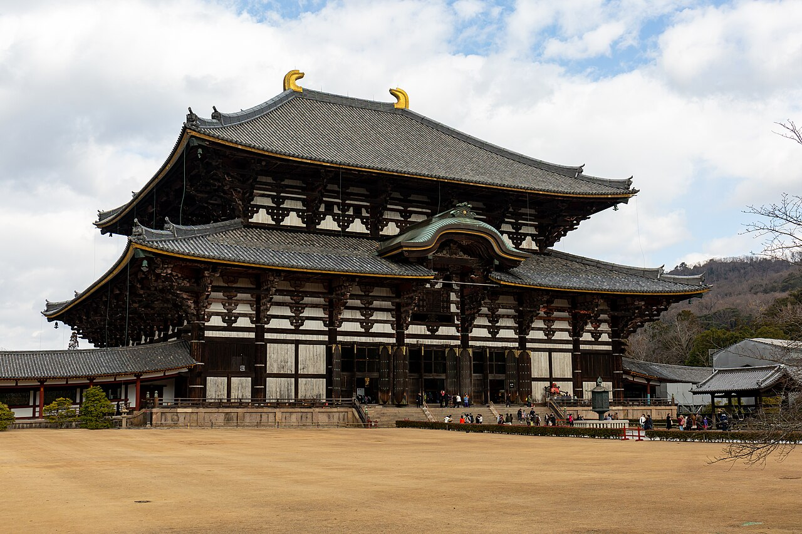
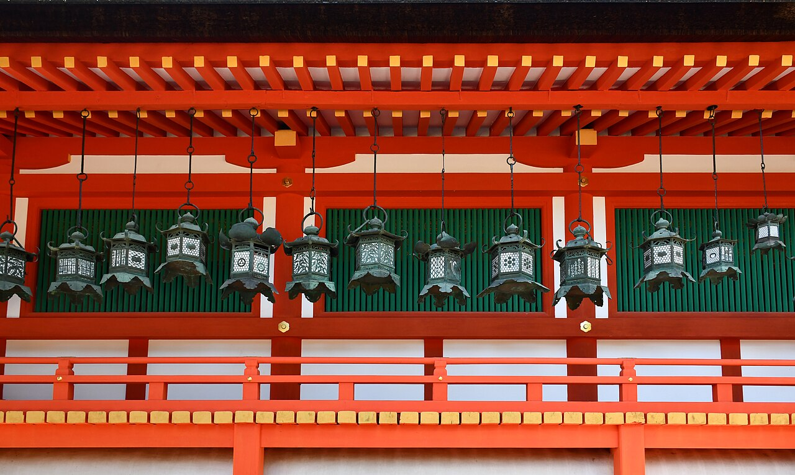

Japan's first capital, 45 minutes from Kyoto, where about 1,200 wild deer roam the park and bow for crackers. The Great Buddha of Todai-ji is one of the largest bronze statues on earth, sitting inside one of the largest wooden buildings on earth.



01Nara Park deer
Buy shika senbei (deer crackers) from a street cart and get mobbed by deer that literally bow to ask. Endless entertainment.
02Todai-ji
The Great Buddha Hall: a 15-meter, 500-ton bronze Buddha from the year 752 inside a colossal wooden hall.
03The pillar hole
A pillar in the hall has a hole said to be the size of the Buddha's nostril, crawl through it for enlightenment. Mostly for kids, absolutely still funny.
04Kasuga Taisha
A shrine reached through forest paths lined with 3,000 stone lanterns, deer wandering between them.
05Nakatanidou
The famous high-speed mochi-pounding shop, catch the show and eat one warm.
Good to know
- Go morning for cooler air and calmer deer, they get pushy by afternoon.
- Bow to a deer and it bows back, hide the crackers when you're done or they will find them.
- The JR Nara line back to Kyoto stops at Uji, so tea town pairs perfectly with the return trip.